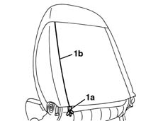
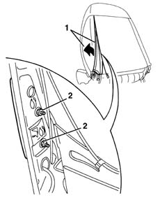
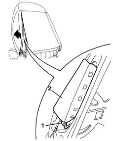
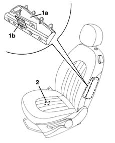

5580C44 front side bag module one lh or rh r r
- Path
- Procedures > 55 ELECTRICAL EQUIPMENT > 5580 SPECIAL ACCESSORIES > 5580C air bag system > 5580C44 front side bag module one lh or rh r r
- Kind
- repair procedure (removal / refitting; the operation number is the code)
- Applies to
- all engines; all production periods
- Interactive page
- https://sloeber94.github.io/elrnDB-lYpsln/en/#/2429456
Applies to: all engines; all production periods
Applies to: all engines; all production periods
 Removing
Removing
 Refitting
Refitting1. Open the hinges (1a) along the entire section (1b).

Applies to: all engines; all production periods
1. Move the cover with padding slightly.
2. Undo the Air Bag module nuts.

Applies to: all engines; all production periods
1. Disconnect the electrical connection.
2. Remove the Air Bag module.

Applies to: all engines; all production periods
Place the Air Bag module in the special cupboard, resting it on a free surface with the bag facing upwards.
Applies to: all engines; all production periods
Refitting
RemovingObserve the following precaution.
If a new module is being fitted, attach the labels as described below.
1. Detach the removable part (1b) of the adhesive label from the new module (1a). Place a copy of the label (1b) in a specific file containing the vehicle details (model, registration data, chassis number) and the serial number of the old module. This file should be kept for future checks.
2. Apply the detachable part of the original label (1b) to the bottom of the seat, where there are already similar labels for the seat, squab cover and Air Bag wiring. However, it should first be perforated to indicate the month and 14 years after the year when the module is fitted (e.g. 2017 will correspond to 2003).

Applies to: all engines; all production periods
Position the airbag module connecting the electrical connection.
Tighten the retaining nuts.
 | Fastening | Component | Ø | Value (daNm) |
|---|---|---|---|---|
- | Nut | FRONT SIDE AIR BAG MODULE ASSEMBLY. | M6 | 0.8 |
Position the trim and close the hinges.
Move the seat through all its various settings to ensure that movements take place without binding or noise.
Check the operation of the system using the Examiner.